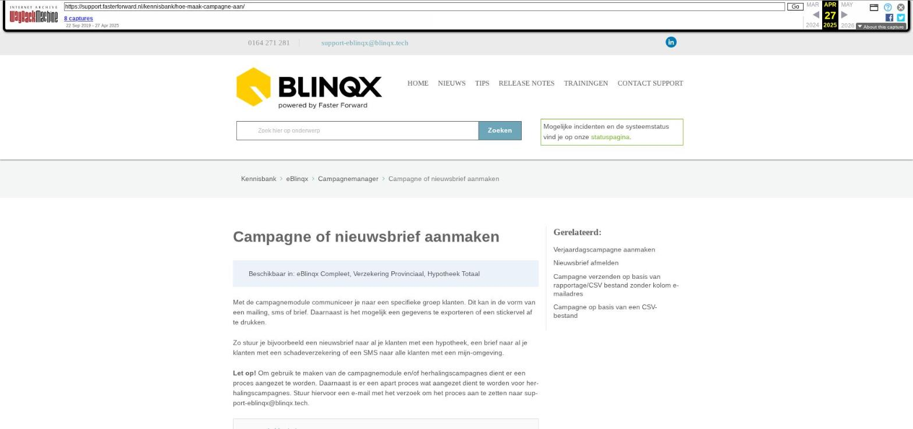

Campagne of nieuwsbrief aanmaken
Beschikbaar in: eBlinqx Compleet, Verzekering Provinciaal, Hypotheek Totaal
Met de campagnemodule communiceer je naar een specifieke groep klanten. Dit kan in de vorm van een mailing, sms of brief. Daarnaast is het mogelijk een gegevens te exporteren of een stickervel af te drukken.
Zo stuur je bijvoorbeeld een nieuwsbrief naar al je klanten met een hypotheek, een brief naar al je klanten met een schadeverzekering of een SMS naar alle klanten met een mijn-omgeving.
Let op! Om gebruik te maken van de campagnemodule en/of herhalingscampagnes dient er een proces aangezet te worden. Daarnaast is er een apart proces wat aangezet dient te worden voor herhalingscampagnes. Stuur hiervoor een e-mail met het verzoek om het proces aan te zetten naar support-eblinqx@blinqx.tech.
1. Maak de campagne aan
2. Vul gegevens van de actie in
3. Vul inhoud actie en voer campagne uit
Indien je bij media hebt gekozen voor "e-mail":
Voorbeeld verzenden
Indien je bij media hebt gekozen voor "brief/correspondentie":
Indien je gekozen hebt bij media voor "SMS":
Tabblad selectie
Campagne aanmaken vanuit SMART
Gegevens automatisch ophalen met tags
Resultaten campagne
Campagneactie kopiëren
Campagne(actie) uitzetten
1. Maak de campagne aan
Ga naar de campagnemanager. Als je al een campagne hebt voor het informeren van je klanten, zoals "Nieuwsbrief", "Dagelijkse felicitatie verjaardag" of "Klanten informeren", open deze dan. Als je nog geen campagne hebt van waaruit je je klanten informeert, maak dan een nieuwe aan met het -icoon linksboven.
Een campagne is een verzamelnaam voor meerdere acties. Een actie is bijvoorbeeld een maandelijkse nieuwsbrief.
Vul bovenaan de gegevens in voor de campagne.
De start- en einddatum bepalen tot wanneer de campagneacties uitgevoerd worden. Als de einddatum is verstreken, dan worden de campagneacties niet meer uitgevoerd.
Bij 'Doel' geef je het doel aan van de campagne, zodat je dit altijd terug kan zien.
Bij 'Organisatie' kies je voor welke organisatie deze campagne moet worden uitgevoerd. Als jouw Eblinqxomgeving meerdere organisaties bevat, moet je hier dus op letten.
Als je dit hebt ingevuld, maak je een nieuwe actie aan met de knop 'Nieuwe actie'.
2. Vul gegevens van de actie in
Vul de velden van de actie in:
Geef aan welke rapportage je wilt gebruiken. In dit voorbeeld gebruiken we "CRM – Dossiers met natuurlijke personen", omdat die alle klantdossiers met personen (dus geen organisaties) toont.
Je kan ook een ontvangers lijst uploaden op basis van een Excel-bestand (CSV).
Het is hier ook mogelijk om een persoonlijke selectie uit een rapportage te selecteren.
Bij 'Doel actie' geef je aan wat het doel is van de actie. Dit zie je na het verzenden terug in het tabblad 'CRM' in een klantdossier.
Bij 'Media' geef je aan om wat voor type actie het gaat. In dit geval is dat e-mail.
Zet 'Actief' op 'Ja' om te zorgen dat de campagne wordt verzonden zodra je dit wilt.
Je kan ervoor kiezen om de campagne te herhalen via 'Herhalings actie'. Om herhaling in te richten op je eBlinqxomgeving, stuur je een e-mail naar support-eblinqx@blinqx.tech.
Bij 'Bronvermelding' geef je aan wat de bron is van de ontvangers van deze campagne.
Klik op het opslaanicoon linksboven om op te slaan.
3. Vul inhoud actie en voer campagne uit
Indien je bij media hebt gekozen voor "e-mail":
E-mailbox afzender: vul de mailbox in waarvan de campagne verstuurd dient te worden. Indien je hier kiest voor een Office365 mailbox waarbij de e-mail via Office 365 verstuurd wordt dan wordt deze mailbox ook automatisch ingevuld bij e-mailadres afzender.
Naam afzender: vul de naam in die als afzender bij de e-mail moet komen te staan
E-mailadres afzender: vul hier het e-mailadres in die getoond moet worden als afzender. Dit veld wordt automatisch gevuld en uitgegrijsd als je bij het veld 'E-mailbox afzender' een Office 365 mailbox hebt gekozen waarbij de e-mail via Office 365 wordt verstuurd.
Naam ontvanger: vul hier de tags in van de namen die als ontvanger getoond moeten worden in de e-mail
E-mailadres ontvanger: vul hier de tags in van het e-mailadres. Indien je de e-mail bijvoorbeeld naar 2 personen uit het dossier wilt versturen, dan vul je een ; in tussen de tags die de verschillende e-mailadressen ophaalt.
Let op: ook deze tag moet zijn informatie ophalen vanuit het csv bestand/bestaande rapportage geselecteerd in deze actie. Dus wat in de tag na 'Campagne –>' komt, moet overeenkomen met de kolom van het e-mailadres. Ook is het mogelijk om een campagne te verzenden wanneer er in de rapportage geen kolom met e-mailadres staat. Lees hier hoe je dit kunt doen.
Onderwerp: vul het onderwerp van de e-mail in
Indien je wilt traceren of de e-mail afgeleverd en/of gelezen is dan vink je 'Traceer openen en klikken op links' aan
Bericht html: voer hier de e-mail. Je kan de tekst opmaken met de teksteditor aan de bovenkant van dit vak, of de broncode uploaden.
Het is mogelijk om in het htmlveld een link te verwerken waar de klant zich kan afmelden voor de nieuwsbrief. Lees hier hoe je dit kunt doen.
Voorbeeld verzenden
Indien je hiervan een voorbeeld naar jezelf wilt sturen, kan je de volgende stappen nemen:
- Ga naar het tabblad "Selectie"
- Klik op "Selectie ophalen"
Nu verschijnt er een derde tabblad "Resultaat"
Hier kan je een voorbeeld naar jouzelf sturen door op de knop "Voorbeeld" te klikken. Hier kan je dan jouw eigen e-mailadres invullen
Indien je bij media hebt gekozen voor "brief/correspondentie":
Kies een document template
Geef de brief een naam en omschrijving
Kies een status
Sla de selectie op
Er ontstaat dan een nieuw veld
Indien gewenst kan je hier een "standaard tekst" kiezen
Deze kan je dan invoegen
De tekst kan je naar eigen invulling wijzigen
Ga naar het tabblad "selectie"
Klik op "selectie ophalen"
Nu verschijnt er een derde tabblad "resultaat"
Hier staat bij "voorbeeld" een "download brief" mogelijkheid, waarin je de brief kan bekijken
Wanneer je de brief definitief wil maken, klik je op "uitvoeren"
De brieven (met eventuele ingevulde tags) komen dan bij resultaten te staan
Hier kan je de brieven printen en vervolgens versturen
Indien je gekozen hebt bij media voor "SMS":
Toets een mobiel telefoonnummer in of maak gebruik van tags bij "Mobiel nummer"
Noteer bij "Afzender" de naam of tag van de afzender (bijv. Tag dossier adviseur)
Type bij "Bericht" het bericht wat je in de SMS wilt versturen
Ga naar het tabblad "selectie"
Klik op "selectie ophalen"
Nu verschijnt er een derde tabblad "resultaat"
Bij "Voorbeeld" kan je de sms als voorbeeld naar jezelf versturen
De SMS wordt verstuurd, deze is terug te vinden in het klantdossier
Tabblad selectie
In het tabblad selectie komt de selectie naar voren vanuit de rapportage (en eventueel de persoonlijke selectie) die je hebt gekozen of het CSV bestand wat je hebt toegevoegd. Wil je dat de campagne naar de gehele selectie wordt verstuurd dan hoef je niets aan te vinken. Wil je dat bepaalde dossiers niet meegaan in de campagne dan dien je de dossiers aan te vinken die meegenomen moeten worden in de campagne. Let op: dit dien je per pagina op te slaan.
Campagne aanmaken vanuit SMART
Ook is het mogelijk om een campagne(actie) aan te maken vanuit SMART. Hier kies je eerst de juiste selectie en pas je indien gewenst een filtering toe. Vervolgens klik je op de actie 'Maak campagne'.
Er verschijnt een pop-up waarin je kunt aangeven of je gebruik wilt maken van een bestaande campagne of dat je een nieuwe campagne wilt aanmaken. Vervolgens kan je bij de actie aangeven welke media het betreft en welke naam je de actie wilt geven.
Als je de pop-up hebt gevuld, klik je op 'Maak campagne'. Je kunt de campagne verder aanvullen vanuit de campagnemanager. Hiervoor kan je bovenstaande stappen en onderstaande tips volgen.
Gegevens automatisch ophalen met tags
Gebruik tags om voor iedere ontvanger automatisch zijn gegevens op te halen uit zijn klantdossier. Denk hierbij aan voornaam, geboortedatum, hypotheekgegevens of polisnummer.
Voorbeeld voor- en achternaam:
[dossier->eerste persoon->voornaam] [dossier->eerste persoon->tussenvoegsel] [dossier->eerste persoon->achternaam]
Let op! Het is belangrijk te weten dat in de campagne alleen gebruik gemaakt kan worden van de tags die je vindt onder 'Campagne'. De tags die staan onder 'Campagne' halen hun gegevens op uit de rapportage of CSV bestand die gebruikt is in deze campagne. Indien je een incorrecte tag hebt ingevoerd bij 'e-mailadres afzender' of 'e-mailadres ontvanger' dan krijg je de volgende melding te zien:
Deze melding verschijnt echter ook als onder het tabblad Resultaat bij één van de eerste 5 resultaten de kolom die door de tag wordt opgehaald leeg is. Dan kan je deze melding negeren, want de e-mail wordt wel verstuurd naar degenen waarbij deze kolom wel gevuld is.
Resultaten campagne
Wanneer je de campagne hebt uitgevoerd, zie je hoeveel klanten van het totaal al verwerkt zijn. Ook wordt hier een percentage weergegeven.
Wanneer er na 20 minuten nog niets verwerkt is, kan het zo zijn dat er een andere campagne op dit moment al wordt uitgevoerd. Deze moet eerst worden voltooid, voordat de volgende wordt verstuurd. Is dit niet het geval, controleer dan eerst of de campagne wel actief staat. Dit is te zien aan het lampje rechts in de regels bij "Acties".
Het campagneproces loopt elke 15 minuten en is zo ingesteld dat andere processen geen hinder/vertraging ervaren door de campagne die wordt verstuurd. Het kan dus voorkomen dat niet alle e-mails/brieven/SMS tegelijk verstuurd worden.
Wanneer je in de campagne 'traceer openen en klikken op links' aan hebt aangevinkt dan kan je traceren of de e-mail afgeleverd en/of gelezen is. Vaak geven deze twee kolommen dezelfde resultaten. Deze twee resultaten kunnen we alleen maar meten als er een link in de e-mail is meegestuurd en iemand op een linkje in de mail heeft geklikt. Als er geen linkjes in de mail staan weten we niet of hij daadwerkelijk afgeleverd is. Ook is het resultaat afhankelijk mailproviders en instellingen. Dit kan je zien in het tabblad 'Resultaat':
In het tabblad Selectie kan je filteren op de verschillende resultaten. Dit door de checkbox voor het resultaat aan te vinken en te klikken op Zoeken.
Campagneactie kopiëren
Indien je een bepaalde actie nogmaals wilt herhalen, is het mogelijk een campagneactie met dezelfde uitgangspunten als een voorgaande actie te kopiëren. Klik hiervoor op het kopieer teken achter de actie:
Campagne(actie) uitzetten
Zowel achter de campagnemap als de campagneactie staat een aan- uitsymbool. Standaard komt de campagne(actie) op actief te staan (het symbool is dan oranje). Met dit symbool kan je de campagne(actie) uitzetten (het symbool is dan grijs). Wanneer de campagne(actie) uitstaat dan wordt deze niet (meer verder) uitgevoerd. Wanneer je de campagne terug aanzet, wordt de campagne verder verwerkt.
Let op: aan het gebruik van de campagne module kunnen rechten verbonden zijn.
Afbeeldingen bij dit artikel


Schermafbeelding van de oorspronkelijke pagina

Bron: Wayback Machine-archief